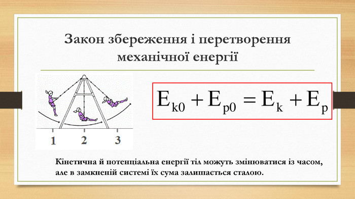
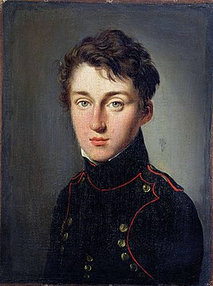

Закон збереження енергії
— принцип, згідно з яким повна енергія замкненої системи зберігається впродовж часу.
Енергія не виникає з нічого і не зникає в нікуди, а може лише перетворюватись з однієї форми на іншу.
Перехід від поняття «живої сили» до поняття «енергії» відбувся на початку другої половини XIX століття і був пов'язаний з тим,
що поняття сили уже було уведено в іншому розумінні у ньютонівській механіці.
Саме поняття енергії у сучасному трактуванні було уведене ще в 1807 році Томасом Юнгом у його «Курсі лекцій з натуральної філософії і механічних мистецтв».
Перше строге визначення енергії дав Вільям Томсон у 1852 році у роботі «Динамічна теорія тепла»:⇓
Під енергією матеріальної системи у певному стані ми розуміємо виміряну у механічних одиницях роботи суму усіх дій,
які відбуваються поза системою, коли вона переходить з цього стану будь-яким способом у довільно обраний нульовий стан

Нікола Леонар Саді Карно ( 1 червня 1796 — 24 серпня 1832) — французький фізик і математик.
Син відомого політичного діяча і математика Лазара Карно і дядько Марі-Франсуа Саді Карно,
майбутнього президента Франції. Саді Карно здобув хорошу домашню освіту.
У 1812 блискуче закінчив ліцей Карла Великого і поступив в Політехнічну школу — найкращий на той час навчальний заклад Франції.
У 1814 він закінчив Політехнічну школу шостим за успішністю і був направлений в Інженерну школу в місті Мец.
Після завершення Інженерної школи у Меці в 1816 був розподілений в інженерний полк, де провів кілька років.
У 1819 виграв конкурс на заміщення вакансії в Головному штабі корпусу в Парижі і перебрався туди.
У Парижі Карно продовжив навчання. Відвідував лекції в Сорбонні , Колеж де Франс, Консерваторії мистецтв і ремесел.
Там він познайомився з хіміком Нікола Клеманом, який займався вивченням газів. Спілкування з ним збудило інтерес у Карно до вивчення парових машин.
У 1824 вийшла перша і єдина робота Саді Карно — «Роздуми про рушійну силу вогню і про машини, здатні розвивати цю силу». Ця робота вважається основоположною в термодинаміці .
У ній було проведено аналіз існуючих у той час парових машин, і було виведено умови, за яких ККД досягає максимального значення (у парових машинах того часу ККД не перевищував 2 %).
Крім цього у цій же роботі були запроваджені основні поняття термодинаміки: ідеальна теплова машина, ідеальний цикл, оборотність і необоротність термодинамічних процесів.
У 1828 Карно полишив військову службу. Він багато працював. Помер Карно в 1832 році від холери. За тодішніми правилами боротьби з епідемією все його майно,
в тому числі і папери, було спалено. Таким чином, його наукова спадщина була втрачена. Вцілів лише один записник — у ньому зокрема було сформульовано Перший закон термодинаміки.
На честь вченого названо астероїд головного поясу, відкритий 8 квітня 1991 року — 12289 Карно